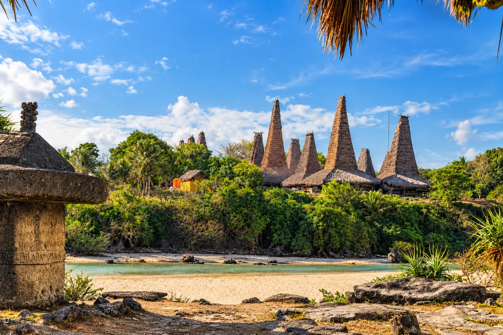
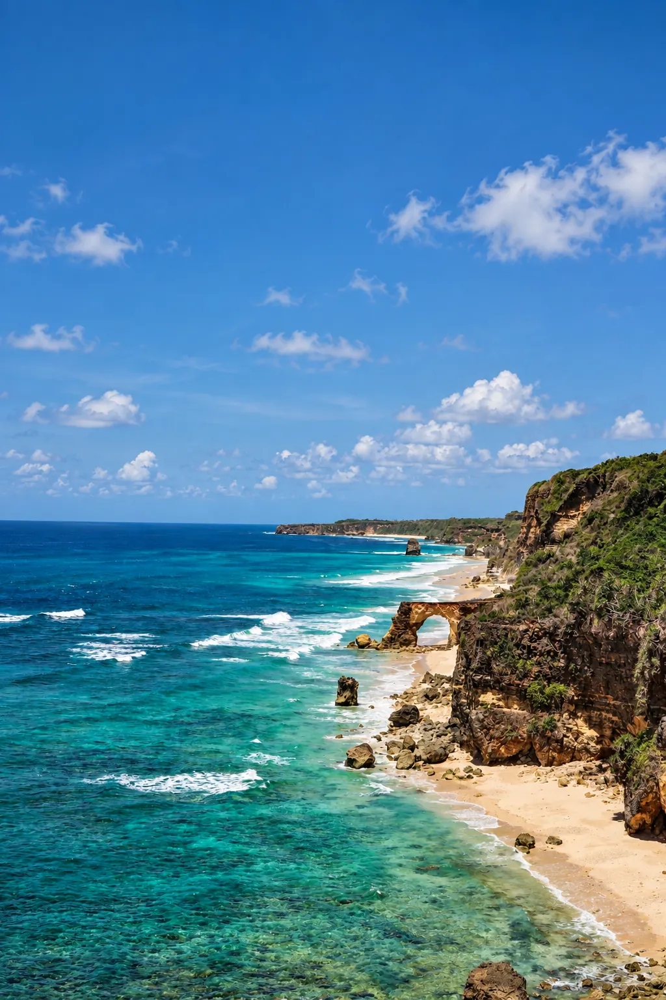
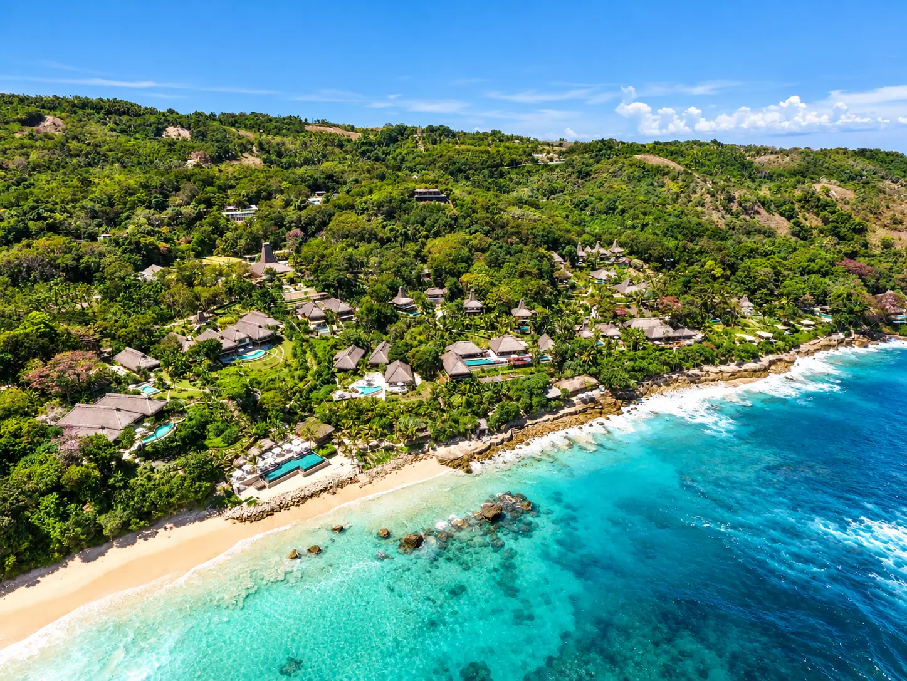
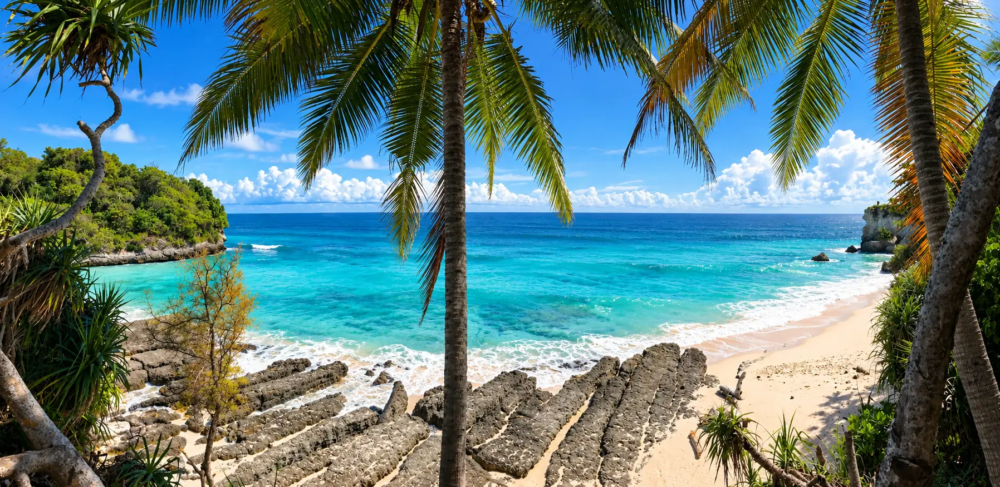
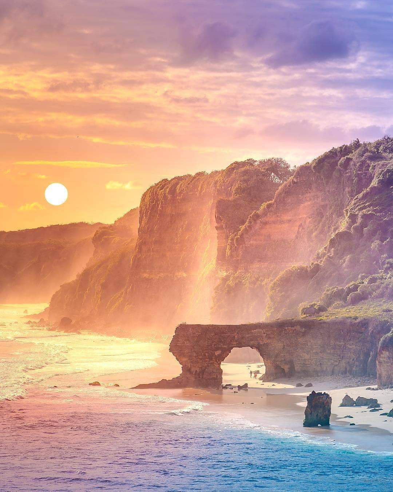
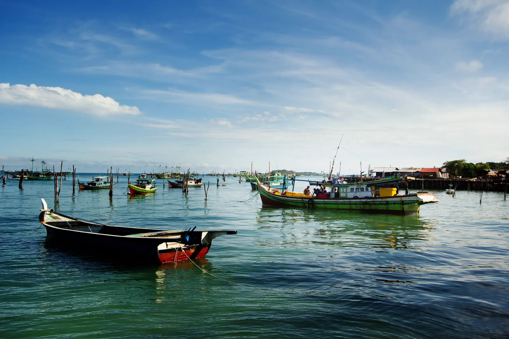
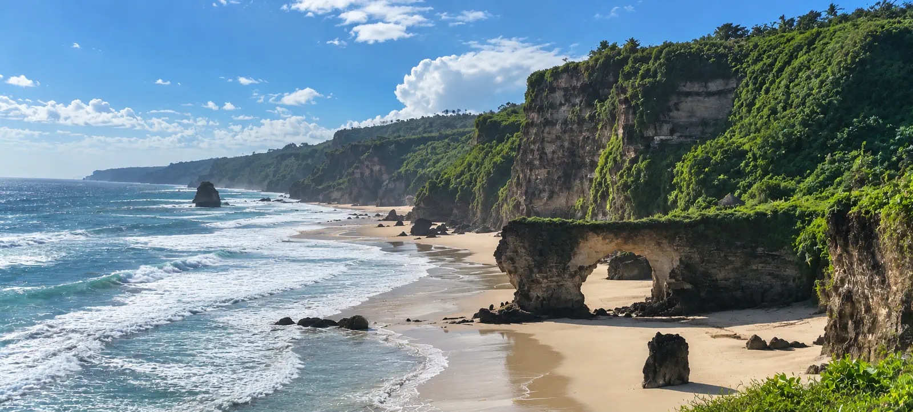
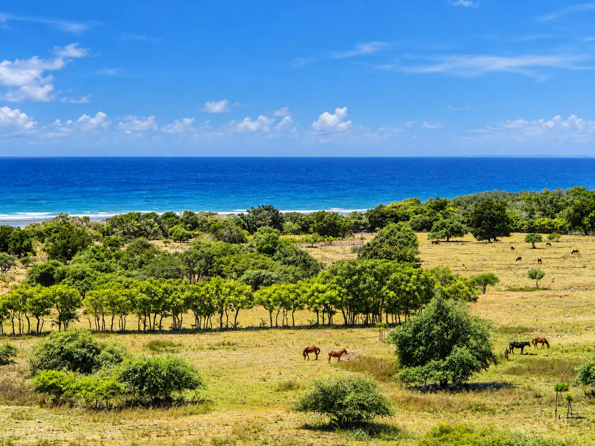

Contrairement à Bali, la plupart des plages de Sumba restent vides même en haute saison. Voici les 14 que nous recommandons le plus, classées par zone — des grandes arches de pierre de l'Ouest aux mangroves de l'Est.

Ouest
Kampung Ratenggaro
Village face à l'océan, plage à l'embouchure de la rivière.

Ouest
Pantai Mandorak
Arche de pierre naturelle spectaculaire.

Ouest
Pantai Marosi
Formations rocheuses, visible à marée basse uniquement.

Ouest
Kerewei Beach
Spot de surf confidentiel, zone débutant à marée haute.

Ouest
Mananga Aba Beach
Plage déserte, hors des radars touristiques.

Ouest
Pantai Watu Bella
Petite anse à l'eau cristalline, accès via Patiala Bala.

Ouest — Kodi
Mbawana Beach
Grande arche de pierre, secteur de Kodi.

Ouest — Kodi
Pero
Village de pêcheurs musulmans, barques colorées.

Est
Plage de Walakiri
Les célèbres mangroves "arbres dansants" au coucher du soleil.

Sud-Est
Watuparunu Beach
Rocher à escalader, quasiment aucun visiteur.

Ouest — Kodi
Tanjung Mareha
Vue double sur Mbawana et les falaises de Maladong.
Ouest
Pantai Kita
Près de Tambolaka, bassins naturels à marée basse.

Est
Puru Kambera
Pins en bord de mer, chevaux sauvages, snorkeling.
Sud
Plage de Tarimbang
Baie sauvage, spot de surf réputé.
Crédits des nouvelles photos : Mananga Aba — Sumba.travel (CC BY-SA 4.0, image non modifiée) · Watuparunu — Sam Do / Unsplash.